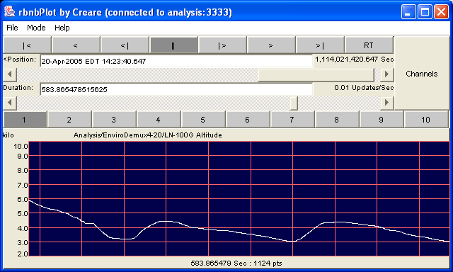

Example rbnbPlot in Table Mode
Introduction
Overview
Setup and StartupMenu Bar
File
Open RBNBMode
Close RBNB
Load Config
Save Config
Export to DataTurbine
ExitPlotWindow
TableCascadeHelp
Tile
Manual
AboutOperation Controls
Playback Buttons
Position Slider
Duration Slider
Channel Selection
Display GroupsPlot Configuration
Automatic Scaling
Manual Scaling
Zooming
User Info Interpretation
Example rbnbPlot Display, Showing Text, StripChart, and
Image Display Types
The rbnbPlot window is comprised of several functional areas:
Menu Bar for connecting, saving configuration, and setting operation mode Operation Controls for selection of channels, data position and plot duration Plot Configuration menus for plot axis scaling
The rbnbPlot application has the following optional
command-line
arguments:
| Option | Description |
| -c | Show channels with unknown point sizes (default is to hide them). |
| -d duration | Specify a startup time duration for the initial display of data (float). |
| -D max duration |
Specify the maximum duration the
slider will allow. |
| -u time units | Units for time (string). Default is 'Sec'. |
| -r host:port | Specifies DataTurbine to which to connect; defaults to none, use File/Open to connect. |
| -k | Attempts to kill DataTurbine when exiting rbnbPlot |
| -p x,y | Specify upper left corner of main window in pixels; default centers window on screen |
| -s min,max,div | Specifies manual scaling from min to max with div divisions |
| -S | "Start" mode, which forces rbnbPlot to start up in RT mode (versus paused mode) |
| -w msec | Specify number of extra milliseconds to sleep between real-time updates |
| -n | Allow RealTime Streaming |
| -g |
Turn off gridline scrolling. |
| -i | Interpret 4 byte data values as integers (default is float) |
Example:
java -jar plot.jarOn startup or upon the initial opening of a connection to a DataTurbine, rbnbPlot attempts to:
The endpoints of the position slider reflect the earliest and latest available data. The default initial run mode is set to RT, so the plots automatically update as data becomes available.Make a connection to the specified DataTurbine Obtain a list of all available channels Put 4 channels into each display group Obtain a 'reasonable' amount of data for each channel in the first display group
Opening a connection to the DataTurbine is required before data can be displayed. Provide the DataTurbine host name (or IP address) and port number. You should see confirmation of your connection in the rbnbPlot title bar, and the available channels will be listed in the channel selection panel.
This function pops up a menu for loading previously-saved rbnbPlot configuration (see Save Config). Click OK and the display groups, channels, and scaling will be restored to the saved settings.
This function allows you to save your current rbnbPlot configuration. You need to give it a name by which it can be later recalled (see Load Config). Information regarding your channel selection, display groups and plot configuration is saved.
This information is saved as an DataTurbine channel. rbnbPlot recognizes configuration channels as special, and will not try to plot a configuration channel as data.
Saved configuration channels are not archived, and will be lost if
the
DataTurbine terminates.
When rbnbPlot is connected
to an RBNB Server, selecting "Export to DataTurbine" from the File menu
pops up the Export to DataTurbine non-modal dialog box (shown
above). In this dialog, specify the desired name of the exported
source and whether the source should be archived. Hitting the Export button will copy the
currently displayed channels to a new RBNB Source. What you see
is what you
get; i.e. the same data that is currently plotted is exported. Be
warned that exporting a large amount of data can take a long time and
use
a large amount of system memory. After exporting, the new source
is "detached", leaving it connected to the RBNB but not under rbnbPlot's control.
Example rbnbPlot in Table Mode
Table mode displays the following columns of information, one
row for each selected channel:
| Name | Name of the selected channel |
| Units | Given units (if any) of the channel |
| First | Value of first data point for current interval |
| Last | Value of last data point for current interval |
| Min | Minimum data value for selected interval |
| Max | Maximum value in selected interval |
| Ave | Average of all values in selected interval |
| StdDev | Standard deviation of values in selected interval |
| |< | Go to beginning (oldest) of data. |
| < | Play continuously backwards. Press multiple times to go faster. |
| <| | Single-step one interval backwards. |
| || | Pause (stop) playback. |
| |> | Single-step one interval forwards. |
| > | Play continuously forwards. Press multiple times to go faster. |
| >| | Go to end (newest) of data. |
| RT | Real-time (continuous) update. |
The Position information (above the Position slider)
shows
the time-stamp for either the oldest or newest displayed data,
depending
upon the condition. For real-time tracking (RT) and
end-of-data
(>|), the newest time-stamp (right edge of plotted
data)
is shown. For all other cases, the oldest time-stamp (left edge
of
the plotted data) is shown. A position may be typed or pasted
into the textbox, and that data will be fetched and displayed when the
return key is pressed.
Note: Be careful when selecting long durations; it is possible under some circumstances to request very large amounts of data, which can take a long time to fetch and plot, or worse yet, cause an application to run out of memory.
Channel Selection Menu
In Tile mode, channels are displayed first in a single column of
plot
boxes, then in multiple columns, according to a built-in heuristic.
Even though all selected channels will be requested, rbnbPlot can
only
display data for three types of channels: image, text, and
stripchart. Channels are displayed as images if the channel name
ends with ".jpg" or ".jpeg". Channels are displayed as text if
the channel name ends with ".txt" or ".text", or if the channel's MIME
type begins with "text". All other channels are displayed as
Stripchart channels, though data is displayed only for word lengths
given in the table below.
|
|
|
|
|
|
|
|
|
|
|
|
Note: Some data source applications pre-configure display group information, and provide labels which automatically appear on the display group selection buttons.

Example Plot Configuration Pop-Up Menu
The second AutoScale (increasing only) selection only updates the Y-axis limits when the plot scale increases. This latter choice is advantageous when rapidly changing plot scales would otherwise be distracting. You can also specify the initial plot limits and number of Y-axis divisions for this mode.
Autoscale (increasing only) is the default plot mode.
Dragging a Region to Specify Zooming

The Resulting Zoomed Display